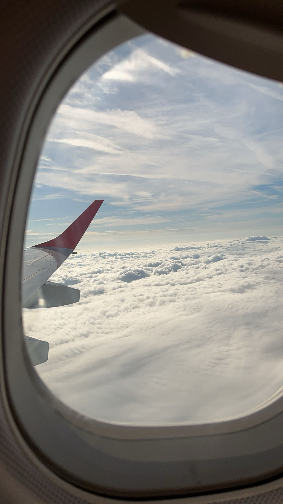
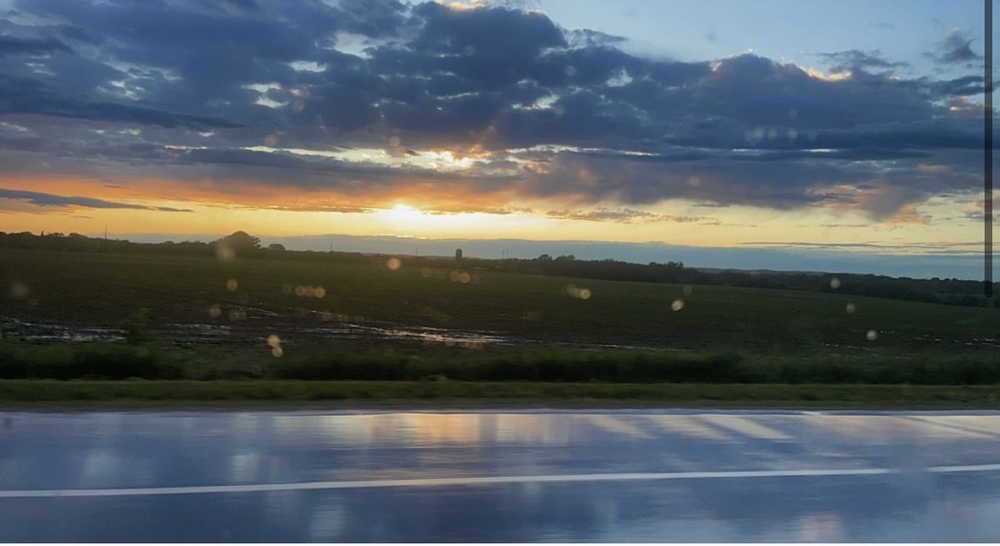

Traveling is a passion of mine and I love exploring and seeing new things. Whether that is a state over or different countries. Seeing new places and experiencing different cultures is such a beautiful thing.
Going along with traveling, I love to caputure memories to be able to look back on. I like to remember the different places I have been or experienced. I also like to take photos at any time such as a nightime sunset.
